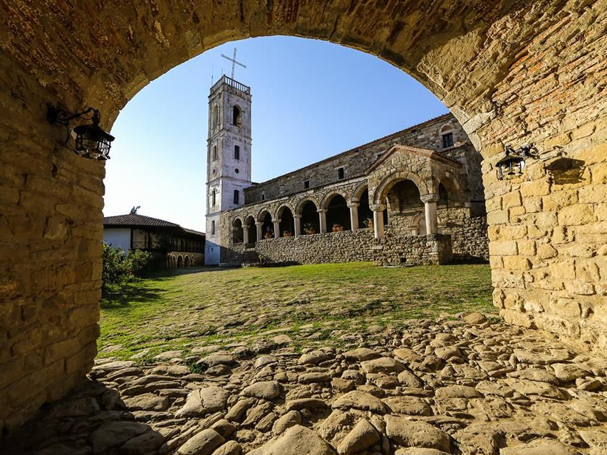

Kongresi, Lushnjë
THE HOUSE OF CONGRESS
Ardenicë, Lushnja District

Një video spot që tregon bukurinë e qytetit tonë.

The Lushnja Congress was an important event in the history of Albania, where key decisions were made regarding the country's future after World War I. During this congress, representatives of the Provisional Government of Albania and other patriots gathered to discuss and approve a series of measures that influenced the formation of modern Albanian statehood.
The Museum House of the Lushnja Congress offers a walk through the historical event of this congress. The exhibits and materials presented reveal important details about the meetings, discussions, and decisions made during this critical period in Albania's history.
Additionally, the museum presents original documents, photographs, and other objects that help to better understand the historical and political context of the time of the Lushnja Congress.
The "Lushnja Congress Museum" is an important destination for those who wish to learn more about the post-war period and the developments that took place in Albania at the beginning of the last century. Through exhibits and informative materials, visitors can better understand the country's history and heritage.


The Lushnja Historical Museum is an important cultural institution in the city of Lushnja, which conserves and displays a wide range of significant historical and cultural objects. With around 200 items in its collection, this museum offers a rich journey through the history and culture of the Lushnja region and beyond.
At the Lushnja Historical Museum, visitors can discover general information about the archaeological objects found in the territory of Lushnja. This includes artifacts and traces of various cultures that have lived and left their mark on this region, making it an important archaeological site in the history of Albania.
Additionally, the museum contains a rich collection of ethnographic objects, which represent the traditions, material culture, and everyday life of the people of this area throughout the centuries. These objects provide a clear view of daily life and the cultural heritage traditions of this land.
In its halls, the Lushnja Historical Museum also showcases a substantial collection of photographs from the periods of World War I and World War II. These photographs shed light on the historical events and their impact on the local community, reinforcing the understanding of this country's history and the memory of significant global events.

It is believed that the foundations of this monastery were laid in 1282 at the initiative of the Byzantine Emperor Andronikos II Palaiologos, who built this temple after his victory over the Angevins in Berat. The foundation for this action was likely the presence of the Chapel of the Holy Trinity, which had been erected there centuries earlier. There is a hypothesis that the chapel might have been built on the ruins of a pagan temple, which was dedicated to the goddess Artemis, and from which the current name "Ardenica" originates. Close to this temple, in the vicinity where the monastery is located today, passed the southern branch of the ancient Egnatian Road, precisely 1 km to its west. Around the monastery, one can still see old buildings here and there, suggesting that there may have been a settlement around it. According to the Ottoman defter (tax register) of 1431-32, in the district of Myzeqe, there was the village of Ardenica with eight houses, which could have extended around the monastery. Another testimony to the importance of this monastery is the fact that it plays an increasingly important role in the history of Albania. In the altar of the Ardenica Monastery Church, the wedding of our national hero, Gjergj Kastrioti (Skanderbeg), to Andronika Arianiti, took place. The ceremony was held at noon on April 21, 1451, by the bishop of Kanina, Felix, in the presence of Albanian princes and ambassadors from Naples, Venice, and Ragusa. This fact was first mentioned in 1940 by the Italian historian A. Lorenconi.
The monastery is of the Byzantine-Orthodox type. Together with the guesthouses added later, it occupies an area of 2,500 m². This monument consists of the Church of the Virgin Mary, the Chapel of the Holy Trinity, the guesthouses, the oil mill, the bakery, the stables, and other buildings. In its center is the "Nativity of the Virgin Mary" church, which is partially built with stones brought from Apollonia and pumice stones. The church is of the basilica type. It has a large volume and is covered with a wooden roof with a flat ceiling. The spaces that make up this church are: the naos, the narthex, and the two-story exonarthex, at the end of which is attached the 24-meter bell tower. On the southern side is the open portico built with columns and arches. The naos is divided into three parts, separated by two rows of wooden columns. The naos is separated from the altar by an iconostasis. The church floor is paved with stone slabs, which also cover the areas of the narthex and exonarthex. In 1743, at the initiative of the Bishop of Berat, Methodius, who was originally from Bubullima (Myzeqe), restoration works were carried out at the monastery, including the Church of the Virgin Mary. The Chapel of the Holy Trinity is located in the northeastern part of the monastery and has dimensions of 7.50 m x 3.70 m. Its entrance is on the western side and is equipped with two small windows on the southern face. This chapel is built with pumice stone and has a space, the semi-circular wall of which separates it from a water trough. The chapel's door is covered with a stone arch, and near its eastern window, there is also a ceramic relief.

The hills of Ardenica are located to the south of the large Myzeqe plain, with a dominant position visible from all sides, at an altitude of 237 meters above sea level. This location, like a balcony, offers views from its bell tower of Kruja, Mount Dajti, Tomorr, the Adriatic Sea, the Kravasta lagoon, and all the way south to the mountains of Laberia, making Ardenica a popular destination for leisure and recreational tourism. Its value is further enhanced by the surrounding oak forest and olive groves along the shores around the monastery. Additionally, the cultural and historical significance of this temple, as mentioned earlier, makes it one of the most attractive centers for academic tourism. In this regard, the fact that the Myzeqe basin, thanks to its strategic and privileged position, has always had a high level of economic and cultural development, also plays a significant role. Evidence of this are several early medieval monasteries, which serve as reflections of this development. The monastery "Nativity of the Virgin Mary" of Ardenica is one such example, and it remains an important cultural landmark.


Kasharaj Lake is located just 2 km away from the city of Lushnjë, in the Karbunarë Administrative Unit, offering a very beautiful landscape that makes this area a popular destination for many tourists. In Kasharaj, there is also a cultural-historical monument (a bridge) dating back to the 12th-13th centuries, still passable today. Built near the Kasharaj lake, it once served as an ancient road linking the Myzeqe region with Elbasan.
Gjyshaj Lake is located 15 km from the city of Lushnjë, in the Ballagat Administrative Unit. Through a picturesque landscape around the hills of Darsia, this area is often compared to "Tuscany of Italy."

Kupas Lake is located 15 km from the city of Lushnjë, in the Hysgjokaj Administrative Unit. The village of Kupas stretches across the hills of Lushnjë and is known for its fruit tree products. The large lake is used for fishing and picnics, while its geographical position makes it an attractive tourist destination.
Explore the most famous historical churches in Albania.

The Church of St. Nicholas in Toshkëz was built in 1797. It was painted in 1813 by the masters Johan and Nikolla Çetiri from Grabova.
It is a typical variant of the churches in Myzeqe, consisting of the Naos and the porches surrounding it on three sides.
It is widely frequented by believers. It is located near the Lushnje-Berat highway and can be reached by small cars and buses.
The Church of St. Mary in Bishqethëm is a typical cult object from the 18th century. The paintings were created by Johani, who belongs to the Çetiri family from Grabova, in 1798. Some of them are well-preserved and constitute an important cultural factor worth visiting. It is frequently visited by believers. It is located near the Fier-Lushnje road, on its eastern side, 12 km from Fier and 500 meters from the Fier-Lushnje highway. It can be accessed by small cars and buses.
Karavasta Lagoon is located near Lushnja and in the center of the Western Lowlands. It is the largest lagoon in Albania and one of the largest in the Adriatic. It is separated from the sea by a narrow strip of land. Valued for its international importance, it has been protected by the Ramsar Convention since November 29, 1996. In the study of Croatian historian Milan Shuflaj, "Serbs and Albanians", published in 1925 in Belgrade, citing Romanian scholar Nicolae Iorga, he mentions the areas between Vrega (Shkumbin) and Devoll (Seman), particularly the province of Slanica with the main port at the mouth of Vrega, which was called Caravastassi.

The "Divjakë - Karavasta" National Park is a national park and protected natural area located in the Fier County, encompassing the districts of Lushnja, Fier, and Kavaja. The current area spans 22,230.00 hectares and is situated 5 km away from Divjakë and 40 km from the city of Lushnja. It is undoubtedly the most important area along the country's coastal zone and one of the most significant in the Mediterranean. Various habitats are found here, such as river deltas, lagoons, sand dunes, psammophytes, halophytes, and hygrophytes, as well as forests with both soft and wild pines, and the presence of juniper (Juniperus monocarpa). Three endemic species of orchids (genus Orchis) and the endemic species Aster albanicus are found in the park. The globally threatened otter (Lutra lutra) is present along the deltas. Other species include the jackal, fox, wild boar, and more. The park and its surrounding area have historical, cultural, and archaeological values with great potential for tourism development. A management plan is being developed with JICA. The lagoon is located near Lushnja. It is home to several rare species of pines and the rare Dalmatian Pelican. It is believed that 5% of the entire population of this pelican species resides here. It is the largest lagoon in the country and along the entire southern Adriatic coast, covering 4,330 hectares, with a length of 10.6 km, width of 4.3 km, and depth of up to 1.5 meters. The lagoon is separated from the sea by a wide strip of sand, covered by a dense forest, and features a large beach along its edge. It connects to the sea through three channels, one of which is artificial and opened for fishing purposes. The water flow in these channels changes direction every 6 hours due to the tide. During a tide cycle, the exchange of water with the sea reaches approximately 1/50 of the total volume of the lagoon. Inside the lagoon, there are small islands that serve as nesting sites for birds. A notable characteristic of the area is the Dalmatian Pelican colony, with around 60 pairs, representing about 5% of the total population of this species worldwide. Karavasta marks the westernmost limit of this species. The presence of several hundred pairs of sea swallows is also significant. This park is part of the Karavasta Lagoon complex, which has been under the protection of the Ramsar Convention since 1994.